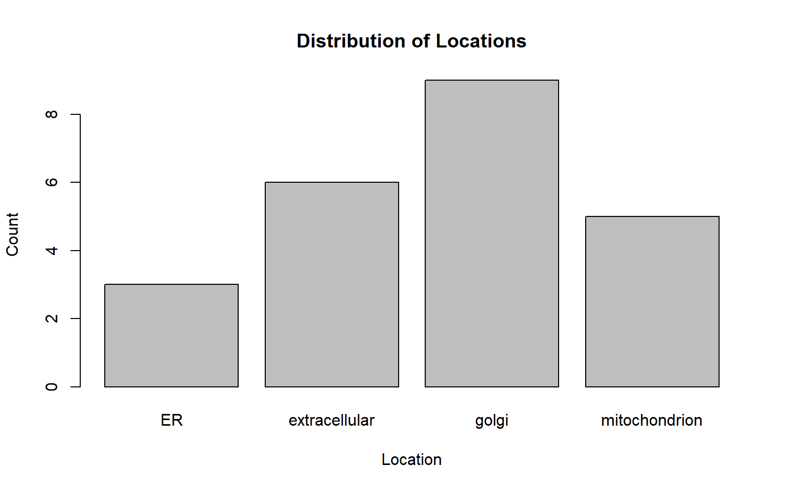
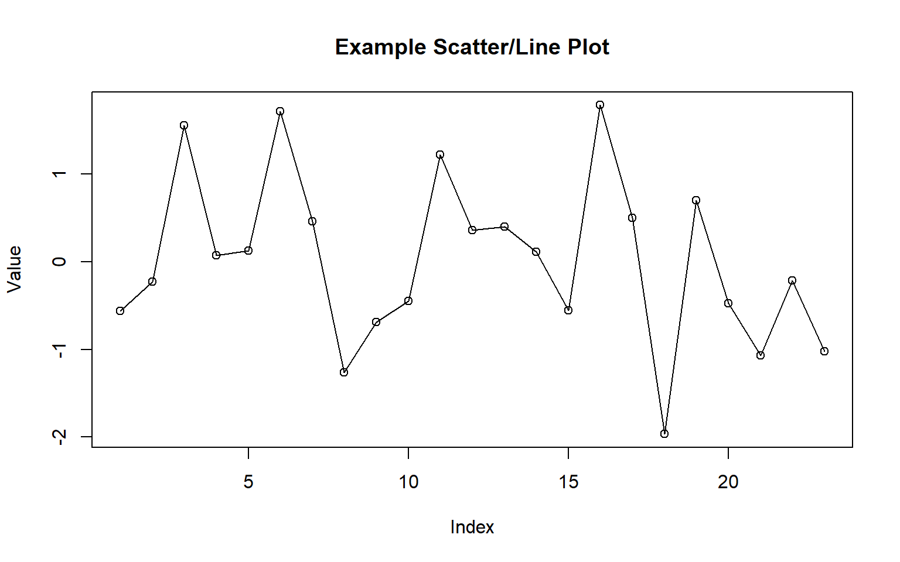
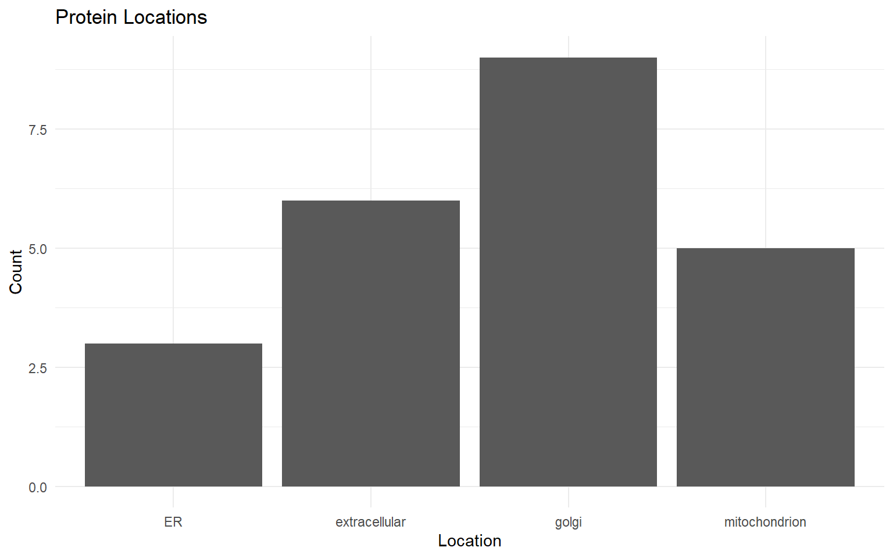

This short tutorial walks through objects, vectors, data frames, plotting, and basic statistics in R. Each section explains the logic first, then shows the code.
Logic. In R, everything is an object. We can assign
values with <- and check their types with
class().
# Variable assignment
x <- 5 # numeric (double)
y <- "Hello" # character (string)
z <- TRUE # logical (boolean)
# Print values
x## [1] 5y## [1] "Hello"z## [1] TRUE# Check data types
class(x)## [1] "numeric"class(y)## [1] "character"class(z)## [1] "logical"Logic. Vectors are the fundamental 1‑D data structure. Operations are vectorized, so arithmetic applies element‑wise.
# Create vectors
num_vec <- c(1, 2, 3, 4, 5)
char_vec <- c("a", "b", "c")
log_vec <- c(TRUE, FALSE, TRUE)
# Vector operations (element‑wise)
num_vec * 2## [1] 2 4 6 8 10num_vec + c(10, 20, 30, 40, 50)## [1] 11 22 33 44 55Logic. Data frames are table‑like objects where each column is a vector of equal length. They are ideal for tabular data such as proteomics annotations or results.
# A tiny example data frame
df_small <- data.frame(
name = c("Alice", "Bob", "Charlie"),
age = c(25, 30, 35),
student = c(TRUE, FALSE, TRUE)
)
df_smallLogic. Below we construct a larger table
df containing protein IDs,
cellular locations, and many numeric columns. We then
inspect structure and summary.
df <- structure(
list(
ID = c("AT5G54740.1","AT5G55730.2","AT5G57655.2","AT5G64100.1","AT5G64260.1","AT5G67360.1",
"AT1G30630.1","AT1G62380.1","AT1G70830.1","AT3G14990.1","AT4G18800.1","AT4G24510.1",
"AT5G15650.1","AT5G19820.1","AT5G59840.1","AT5G47200.1","AT1G12840.1","AT1G76030.1",
"AT1G78900.2","AT3G42050.1","AT4G11150.1","AT1G11860.2","AT1G17290.1"),
Location = c("extracellular","extracellular","extracellular","extracellular","extracellular","extracellular",
"golgi","golgi","golgi","golgi","golgi","golgi","golgi","golgi","golgi","ER","ER","ER",
"mitochondrion","mitochondrion","mitochondrion","mitochondrion","mitochondrion"),
AOX_1h_1 = c(0.844651873,0.50954096,1.12e-08,0.012981372,0.978148381,0.027579578,0.068010151,0.410629215,
0.253838635,0.033631788,0.335713512,0.982799013,0.025910457,0.793810264,0.762431665,0.152154436,
0.027114103,0.000227,1.07e-05,0.721209032,0.086281162,0.483130711,0.014795515)
),
class = "data.frame", row.names = c(NA, -23L)
)
# Inspect
head(df)str(df)## 'data.frame': 23 obs. of 3 variables:
## $ ID : chr "AT5G54740.1" "AT5G55730.2" "AT5G57655.2" "AT5G64100.1" ...
## $ Location: chr "extracellular" "extracellular" "extracellular" "extracellular" ...
## $ AOX_1h_1: num 8.45e-01 5.10e-01 1.12e-08 1.30e-02 9.78e-01 ...summary(df)## ID Location AOX_1h_1
## Length:23 Length:23 Min. :0.00000
## Class :character Class :character 1st Qu.:0.02651
## Mode :character Mode :character Median :0.15215
## Mean :0.32716
## 3rd Qu.:0.61538
## Max. :0.98280# Access columns
df$ID[1:5]## [1] "AT5G54740.1" "AT5G55730.2" "AT5G57655.2" "AT5G64100.1" "AT5G64260.1"df[["Location"]][1:5]## [1] "extracellular" "extracellular" "extracellular" "extracellular"
## [5] "extracellular"# Add a new numeric column
df$New_Column <- seq_len(nrow(df))
# Subset by condition
extracellular_df <- subset(df, Location == "extracellular")
head(extracellular_df)barplot(table(df$Location),
main = "Distribution of Locations",
xlab = "Location", ylab = "Count")
# Add a numeric variable
df$Value <- rnorm(nrow(df), mean = 0, sd = 1)
plot(df$Value, type = "o",
main = "Example Scatter/Line Plot",
xlab = "Index", ylab = "Value")
if (!requireNamespace("ggplot2", quietly = TRUE)) install.packages("ggplot2")
library(ggplot2)
ggplot(df, aes(x = Location)) +
geom_bar() +
theme_minimal() +
labs(title = "Protein Locations",
x = "Location", y = "Count")
mean(df$Value)## [1] 0.02263796sd(df$Value)## [1] 0.9677829summary(df$Value)## Min. 1st Qu. Median Mean 3rd Qu. Max.
## -1.96662 -0.55816 0.07051 0.02264 0.47938 1.78691t_test_result <- t.test(df$Value, mu = 0)
t_test_result##
## One Sample t-test
##
## data: df$Value
## t = 0.11218, df = 22, p-value = 0.9117
## alternative hypothesis: true mean is not equal to 0
## 95 percent confidence interval:
## -0.3958628 0.4411387
## sample estimates:
## mean of x
## 0.02263796if (nrow(df) > 1) {
lm_result <- lm(Value ~ as.numeric(factor(Location)), data = df)
summary(lm_result)
}##
## Call:
## lm(formula = Value ~ as.numeric(factor(Location)), data = df)
##
## Residuals:
## Min 1Q Median 3Q Max
## -2.41533 -0.56751 -0.06815 0.48468 1.51763
##
## Coefficients:
## Estimate Std. Error t value Pr(>|t|)
## (Intercept) 0.7000 0.5998 1.167 0.256
## as.numeric(factor(Location)) -0.2513 0.2098 -1.198 0.244
##
## Residual standard error: 0.9584 on 21 degrees of freedom
## Multiple R-squared: 0.06395, Adjusted R-squared: 0.01937
## F-statistic: 1.435 on 1 and 21 DF, p-value: 0.2443Below are external resources. Write links in markdown, not inside an R code chunk.
sessionInfo()## R version 4.4.2 (2024-10-31 ucrt)
## Platform: x86_64-w64-mingw32/x64
## Running under: Windows 10 x64 (build 19045)
##
## Matrix products: default
##
##
## locale:
## [1] LC_COLLATE=English_Australia.utf8 LC_CTYPE=English_Australia.utf8
## [3] LC_MONETARY=English_Australia.utf8 LC_NUMERIC=C
## [5] LC_TIME=English_Australia.utf8
##
## time zone: Australia/Brisbane
## tzcode source: internal
##
## attached base packages:
## [1] stats graphics grDevices utils datasets methods base
##
## other attached packages:
## [1] ggplot2_3.5.1
##
## loaded via a namespace (and not attached):
## [1] vctrs_0.6.5 cli_3.6.3 knitr_1.49 rlang_1.1.4
## [5] xfun_0.51 generics_0.1.3 jsonlite_1.8.9 labeling_0.4.3
## [9] glue_1.8.0 colorspace_2.1-1 htmltools_0.5.8.1 sass_0.4.9
## [13] scales_1.3.0 rmarkdown_2.29 grid_4.4.2 evaluate_1.0.3
## [17] munsell_0.5.1 jquerylib_0.1.4 tibble_3.2.1 fastmap_1.2.0
## [21] yaml_2.3.10 lifecycle_1.0.4 compiler_4.4.2 dplyr_1.1.4
## [25] pkgconfig_2.0.3 rstudioapi_0.17.1 farver_2.1.2 digest_0.6.37
## [29] R6_2.6.1 tidyselect_1.2.1 pillar_1.10.1 magrittr_2.0.3
## [33] bslib_0.9.0 withr_3.0.2 tools_4.4.2 gtable_0.3.6
## [37] cachem_1.1.0